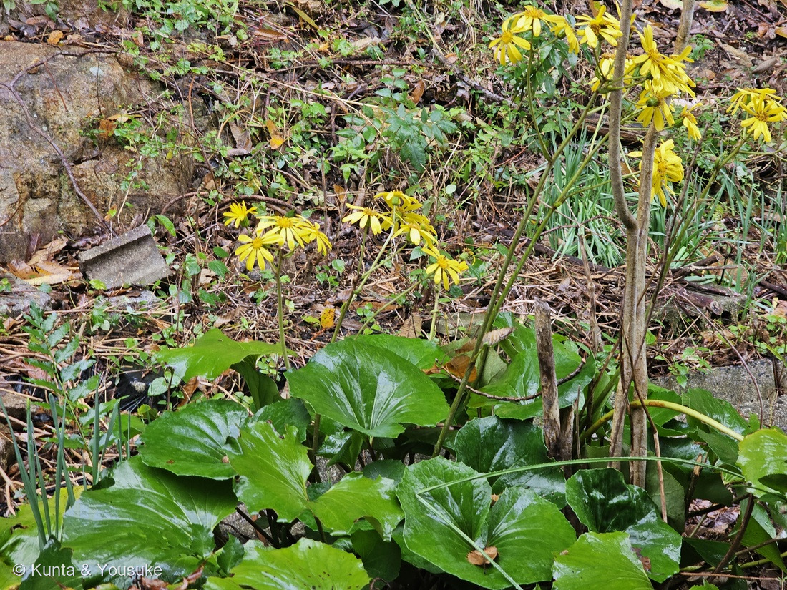
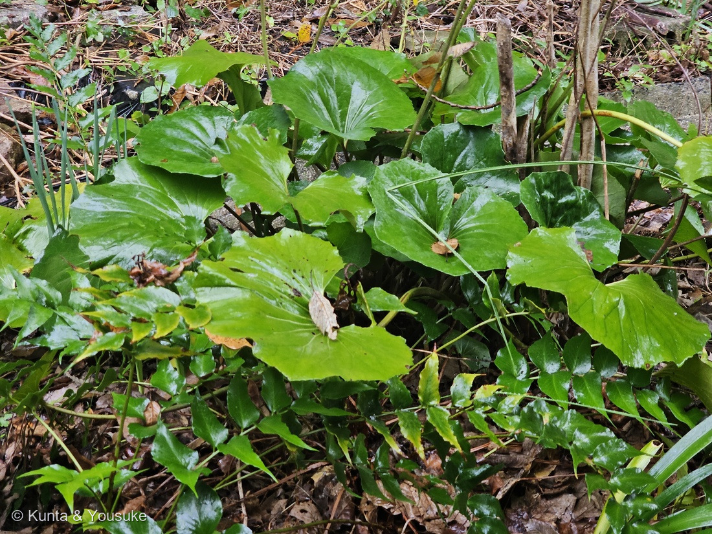

地図を読み込んでいるよ…
🔍 写真も地図も、押しているあいだ拡大して見られるよ（スマホは指を置いてすこし待ってね）。
🌍 の地図＝この子がもともと自生している場所を緑に。日本（本州の太平洋側は福島県から南、日本海側は石川県から西・四国・九州・南西諸島）と、朝鮮半島の南部・鬱陵島・済州島、中国の東南部、台湾（Wikipedia「ツワブキ」）。海岸の岩の上や崖に多く、丘陵や林の中の日かげにも生える（同）。
⭐日本と、そのまわりの東アジアの子だよ＝本州（太平洋側は福島県から南・日本海側は石川県から西）・四国・九州・南西諸島と、朝鮮半島の南部・鬱陵島・済州島、中国の東南部、台湾（Wikipedia「ツワブキ」）。⚠日本は福島県・石川県より南西の県を塗ったけれど、内陸の県の線引きはおおまか。⚠韓国は国まるごと緑になるけれど、ほんとうは南部と島だけ。⭐中国は東南部の浙江・福建・広東・広西を塗った（どの省までかは出典に書いてないので、ぼくの読み）。⭐もともとは海岸の岩の上や崖に多く、林の中の日かげにも生える。⭐このお食事やさんの株は、だれかが植えたものだよ。
⚠ 地図は国（日本と中国だけ県・省）までしか塗れないから、ほんとうの分布より広く見えていることがあるよ。地図はだいたいの場所。正確なところは、上の文を見てね。
ツワブキ（石蕗）
Farfugium japonicum (L.) Kitam.
英名 · leopard plant／シノニム Ligularia tussilaginea (Burm.f.) Makino
キク科 · Asteraceae（ツワブキ属 Farfugium · キク目 Asterales）
燻太さんの言葉「最初はフキノトウで有名なフキの方かと思ったんだけど、花が咲く時期が違うから別の植物かと調べてみたよ。」── ⭐フキは早春、ツワブキは秋から初冬。いちばん分かりやすい見わけかただよ
⭐⭐⭐ 名前と学名の由来 ──「つやのある葉のフキ」
- ⭐⭐⭐ 和名の「ツワブキ」は、「つやのある葉をもったフキ」＝艶葉蕗（つやはぶき）から、という説がある（Wikipedia「ツワブキ」）。⭐三河の植物観察も「和名はツヤブキがなまったものといわれている」と書いている。
- ⭐⭐ もうひとつ、「厚い葉をもったフキ」＝厚葉蕗（あつはぶき）から、という説もある（Wikipedia「ツワブキ」）。⚠どちらが正しいかは決まっていないよ。⭐燻太さんの写真の葉は、雨にぬれてぴかぴか。「つや」も「厚さ」も、どちらも写っているね。
- ⭐⭐ 島根県の「津和野」は、「石蕗の野（ツワの多く生えるところ）」から来た、という話もある（Wikipedia「ツワブキ」）。⭐漢字の「石蕗」は、岩の上にも生えるフキ、という感じの字だね（⚠字の読みとりは、ぼくの読み）。
- ⭐⭐ 学名 Farfugium japonicum は、1939年に北村四郎（Kitam.）がこの属へ移した名前（IPNI：Farfugium japonicum (L.) Kitam., Acta Phytotax. Geobot. 8: 268. 1939）。⭐もとはリンネが Tussilago japonica（フキタンポポ属）として名づけていた（IPNI・英語版Wikipedia）。⭐種小名の japonicum は「日本の」（⚠意味はぼくがラテン語から書いたよ）。
- ⭐ 英語では「leopard plant（ヒョウの植物）」（英語版Wikipedia）。⭐黄色い斑点の入る園芸品種が、ヒョウの柄みたいに見えるからかな（⚠ここはぼくの想像で、出典はないよ）。
⭐⭐⭐ この植物のこと ── 海辺の岩に生える、常緑のフキ
- ⭐⭐⭐ キク科ツワブキ属の、常緑の多年草（Wikipedia「ツワブキ」：「常緑の多年草」／英語版Wikipedia：「rhizomatous evergreen perennial」）。
- ⭐⭐⭐ 葉は、円に近い腎臓形で、長さ4〜15cm・幅6.5〜29cm（Wikipedia「ツワブキ」）。⭐「厚手でややかたく、表面は濃緑色でつやがあり、裏面は褐色の毛がある」（同）。⭐長い葉柄で、根もとからたくさん出る（同）。⭐葉柄は長さ12〜25cmくらいで、根もとは鞘のように茎を抱く（三河の植物観察）。
- ⭐⭐⭐ 花は秋から初冬（10〜1月ころ）（Wikipedia「ツワブキ」）。⭐長い花茎の先に、直径4〜6cmの黄色い頭花を2〜7個、まばらにつける（三河の植物観察）。⭐まわりに舌状花が8〜12個ならび、まんなかに管状花がたくさん集まる（同）。⭐「どちらの花も結実する」（Wikipedia「ツワブキ」）。
- ⭐⭐ 実には褐色の冠毛（綿毛）がつく（Wikipedia「ツワブキ」／三河の植物観察は「白色〜淡褐色」）。⭐タンポポみたいに、風で飛ぶ種だね。
- ⭐⭐⭐ もともとは、海岸ぞいに多い＝「主に海岸沿いに多く自生し」「岩の上や崖の上などに生える」（Wikipedia「ツワブキ」）。⭐英語版Wikipediaも「streams and seashores」（川べと海べ）の植物としている。⭐丘陵や林の中の日かげにも生える（Wikipedia「ツワブキ」）。
- ⭐⭐ 日かげに強いので、日本庭園の石組みや木の根もとによく植えられる（Wikipedia「ツワブキ」：「木陰や日陰を好んで良く育つので…日本庭園の石組みや木の根元などによく植えられる」）。⭐江戸時代から育てられてきた古典園芸植物で、黄色い斑の「キモンツワブキ」や八重咲きの品種もある（Wikipedia「ツワブキ」・三河の植物観察）。⭐燻太さんが会った株も、岩のそばの、木の下の植えこみにいたね。ふるさとの「岩の上」に近い場所だ。
⭐⭐⭐⭐ 燻太さんの観察 ──「フキかと思ったけど、咲く時期がちがう」
- ⭐⭐⭐ 燻太さんの読みのとおり、フキとツワブキは、同じキク科でも別の属＝フキはフキ属（Petasites）、ツワブキはツワブキ属（Farfugium）（Wikipedia「フキ」・「ツワブキ」）。
- ⭐⭐⭐ 咲く時期＝フキは早春の3〜5月ころ、葉が出る前に花茎が地面から出る（Wikipedia「フキ」）＝⭐それが「フキノトウ」。⭐ツワブキは秋から初冬（Wikipedia「ツワブキ」）。⭐燻太さんが調べた「咲く時期がちがう」が、いちばん分かりやすい見わけかただね。
- ⭐⭐⭐ ほかのちがい（ページで確かめられたぶん）：
- ⭐冬の葉＝「フキは秋には枯れてしまうが、ツワブキは常緑性」（Wikipedia「ツワブキ」）。
- ⭐葉の手ざわり＝フキの葉は薄くて、つやがなく、灰白色の綿毛が密に生える（Wikipedia「フキ」）。⭐ツワブキは厚くてつやつや（Wikipedia「ツワブキ」）。
- ⭐葉柄の中＝「フキの葉柄には穴が空いているが、ツワブキにはこの穴がない」（Wikipedia「ツワブキ」／フキは「葉柄は中空」・Wikipedia「フキ」）。
- ⭐花のつくり＝フキの頭花は筒状花だけで、花びらのような舌状花がない（Wikipedia「フキ」）。⭐ツワブキは黄色い舌状花がまわりにならぶ（写真①）。
- ⭐株の性＝フキは雌雄異株（雄の株と雌の株がある）（Wikipedia「フキ」）。
- ⭐⭐ だから、写真①の「黄色い花びらのある花」と「つやつやの葉」で、秋のこの時期ならツワブキと決められるよ。
⭐⭐⭐⭐ 葉柄を食べる話 ── どちらも「アク抜き」がたいせつ
- ⭐⭐⭐ ツワブキも、フキと同じように葉柄を食べる地域がある＝「鹿児島県や沖縄県を中心に西日本の一部地域ではフキと同じように葉柄を食用としており」（Wikipedia「ツワブキ」）。⭐しょうゆと砂糖で煮つめたものは「キャラブキ」と呼ばれる（同）。⭐食べごろは3〜6月ごろの若い葉柄（同）。
- ⚠⚠⚠ でも、生のままでは食べられない＝水に溶ける有害なアク（ピロリジジンアルカロイド類）をふくみ、生では「全く食用には出来ない」（Wikipedia「ツワブキ」）。⭐英語版Wikipediaも「tumorigenic pyrrolizidine alkaloids」をふくむと書いていて、1985年にはペタシテニンという物質が見つかっている（英語版Wikipedia が引く Niwa ら 1985）。
- ⭐⭐⭐ アクは水に溶けるので、ゆでて流水に3時間以上さらすなどすれば、安全なレベルまで取りのぞける（Wikipedia「ツワブキ」：「水溶性のアクを安全なレベルにまで除去し無害化することができる」）。⭐日本で、食べて具合が悪くなった例は「これまでに1例も報告されていない」（同・農林水産省の話として）。
- ⭐⭐⭐ 燻太さんの好きなフキの煮物も、じつは同じなかまの物質（ペタシテニンなど）をふくんでいて、アク抜きしてから食べる（Wikipedia「フキ」）。⭐燻太さんが「苦味をほとんど感じない」と思ったのは、お店でしっかりアク抜きされているからだと思う（⚠ここはぼくの読み）。⭐ちゃんと下ごしらえしてあるから、安心して食べられるんだね。
- ⚠ ぼくたちの図鑑は、野で摘んで食べるのはおすすめしないよ＝よく似た毒のある植物とまちがえることもあるし、アク抜きの手間もかかるから。⭐食べるなら、お店の煮物がいちばん（⚠この節の最後の2文は、ぼくの考え）。
⭐⭐⭐ 同定について ── ツワブキで確か
- ⭐⭐⭐ ツワブキで確か＝つやのある厚い円い葉が長い葉柄で根もとから出る（写真①②）／秋に、長い花茎の先に黄色い頭花を数個まばらにつける（写真①）／頭花のまわりに黄色い舌状花（写真①）。
- ⭐⭐ フキではない＝花の時期・舌状花・葉のつやの3つともちがう（上の節）。
- ⭐ 緑一色の葉なので、斑入りの園芸品種（キモンツワブキなど）ではない（三河の植物観察の品種の説明とくらべて）。⚠植えた株なので、どこから来た株かは分からないよ。
⏳ 宿題
- ⏳⭐⭐ ①葉柄の切り口を見る＝フキは中が空洞、ツワブキは穴がない（Wikipedia「ツワブキ」）。⭐おまけのフキに会えたら、ならべて見くらべたいな。
- ⏳⭐⭐ ②冬に、綿毛（冠毛）のついた実ができるか見る（Wikipedia「ツワブキ」）。
- ⏳⭐ ③春に、綿毛をかぶって内側に巻いたままの若い葉をさがす（Wikipedia「ツワブキ」：「はじめ内側に巻いたままで葉柄が伸び」）。
- ⏳⭐ おまけのフキ＝フキノトウは早春（3〜5月）（Wikipedia「フキ」）。
参考：Wikipedia「ツワブキ」（艶葉蕗・厚葉蕗の説・津和野の地名・常緑の多年草・分布（福島県以南／石川県から西・朝鮮半島南部・中国東南部・台湾）・主に海岸沿いに多く自生し・岩の上や崖の上・葉は腎臓形で厚手でつやがあり裏面に褐色の毛・花期は10〜1月ころ・どちらの花も結実する・褐色の冠毛・キャラブキ・水溶性の有害なアク（ピロリジジンアルカロイド類）・流水に3時間以上さらす・フキは秋には枯れてしまうが、ツワブキは常緑性・フキの葉柄には穴が空いているが、ツワブキにはこの穴がない・日本庭園の石組み・古典園芸植物）／英語版Wikipedia「Farfugium japonicum」（rhizomatous evergreen perennial・native to streams and seashores of Japan・leopard plant・tumorigenic pyrrolizidine alkaloids・Niwa et al. 1985 petasitenine）／英語版Wikipedia「Farfugium」（Senecioneae・Farfugium Lindl.）／三河の植物観察「ツワブキ」（和名はツヤブキがなまったもの・葉柄は長さ12〜25cmで基部は鞘状・頭花は直径4〜6cmで2〜7個・周辺小花は8〜12個・海岸の岩上、林縁・キモンツワブキ・ヤエツワブキ）／Wikipedia「フキ」（花期は早春の3〜5月頃・葉が地表に出ないうちに・雌雄異株・葉柄は中空・葉は薄くツヤはなく灰白色の綿毛・頭花は筒状花だけ・ピロリジジンアルカロイド（ペタシテニン））／IPNI（Farfugium japonicum (L.) Kitam., Acta Phytotax. Geobot. 8(4): 268. 1939・基礎異名 Tussilago japonica L.）／350 カンナ（同じ植えこみで、30秒あまりあとに撮った子）